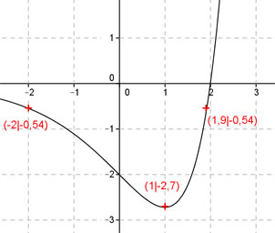
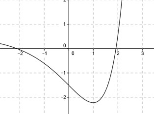

Aufgabe 126 Ergänzen Sie die Wertetabelle für den Graphen: y = (x - 2) * ex x -2 oder 1,9 1 y -0,54 -2,7 y = f(1) = (1 - 2) * e1 y = -1 * 2.718 = - 2,7 gerundet  An welchen Stellen x die Funktion den Wert -0,54 annimmt, ist elementar nicht zu ermitteln. Abgelesen: Es sind 2 Stellen. Zur Berechnung wendet man ein Näherungs- verfahren an, hier die Regula falsi. Regula falsi: x0 = gesuchte Nullstelle x1 * |y(x2)| + x2 * |y(x1)| x0 = ------------------------------ |y(x1)| + |y(x2)| f(x) = - 0,54 eingesetzt: -0,54 = (x - 2) * ex | +0,54 (x - 2) * ex + 0,54 = 0 Als Funktion: y = (x - 2) * ex + 0,54  Abgelesen: Nullstellen zwischen -2,2 und -1,8 und zwischen 1,8 und 2. Nullstelle x01 zwischen -2,2 und -1,8 mit Excel ermittelt: A B C D E F G H I J -2,2 -1,8 0,0883 0,0745 -0,1942 -0,1341 -0,3283 0,1628 -2,0169 0,0054 -2,0169 -1,8 0,0883 0,0054 -0,1780 -0,0096 -0,1876 0,0936 -2,0045 0,0004 -2,0045 -1,8 0,0883 0,0004 -0,1769 -0,0006 -0,1775 0,0886 -2,0036 0,0000 -2,0036 -1,8 0,0883 0,0000 -0,1768 0,0000 -0,1769 0,0883 -2,0036 0,0000 Die gesuchte Nullstelle ergibt sich nach mehreren Näherungen mit ausreichender Genauigkeit zu x01 = -2 gerundet. Weitere Erläuterungen zur Tabelle siehe Aufgabe 101. Die Nullstelle zwischen 1,8 und 2 ergibt sich nach dem selben Verfahren zu x02 = 1,9 gerundet.